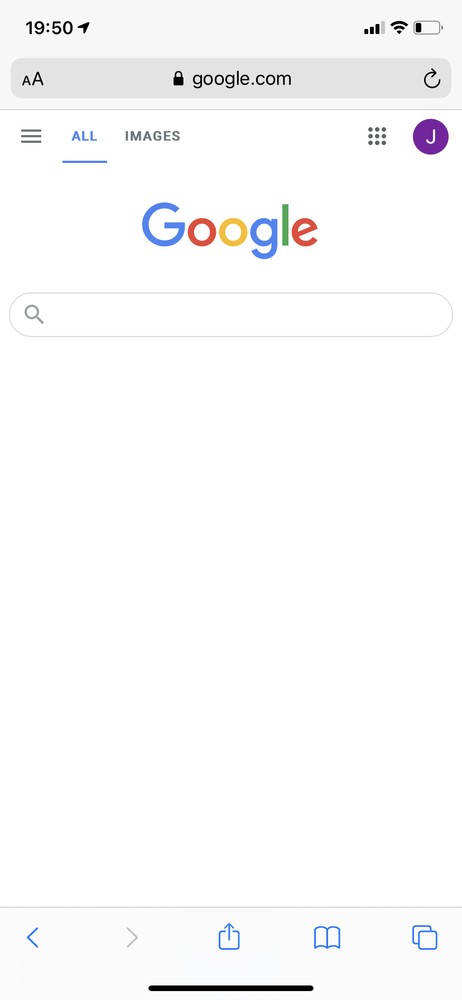
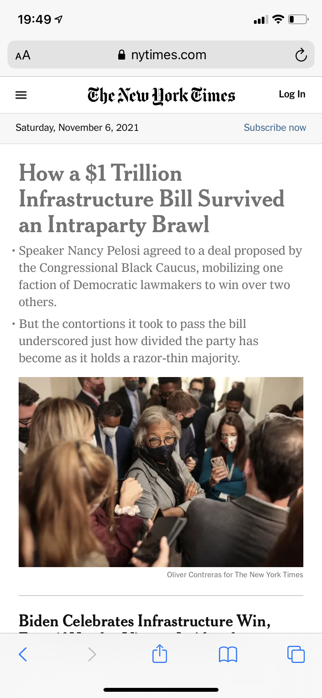
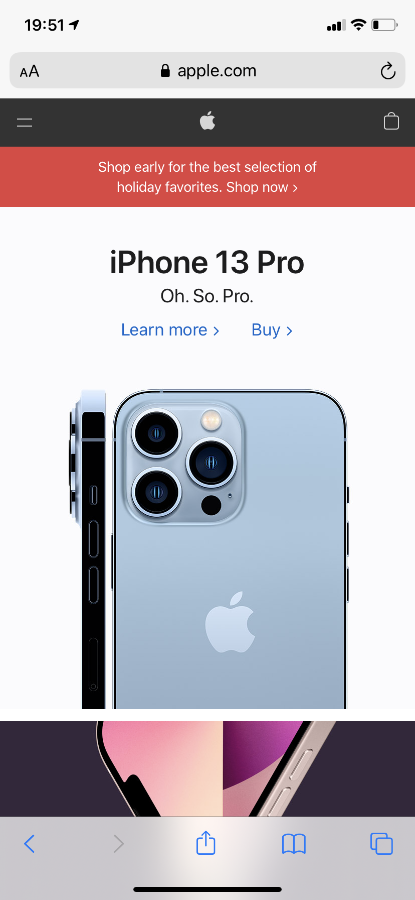

The Google homepage is an iconic example of white space. Because the page is almost entierly white, the use of several domainte colors commands the eye's attention. Essentially, the only other object on the page is the search bar. Search is Google's key identity, so by having a page comprised mostly of whitespace, the user clearly sees what Google does and who they are. There is a simplicity evoked because of the white space.

The New York Times is one of the most iconic news platforms, and they are frquently being updated with new stories. They use visual hierarchy to display the most recent/relevant stories. Headline news is just that, the headline on their page. All other stories are secondary to what The New York Times deems the most pressing story. The hierarchy of the stories is a visual representation of their importance for the user.

Apple is the king of simplicity and it's a key component of their image. Apple sections different topics on their page. They use contrast in each section to create a focal point and guide users through their site. A clear example of this is the red banner that immediately draws the eye. Contrast is used to emphasize the importance of each section and make it easy to understand. Apple is a clear example of contrast because of this.